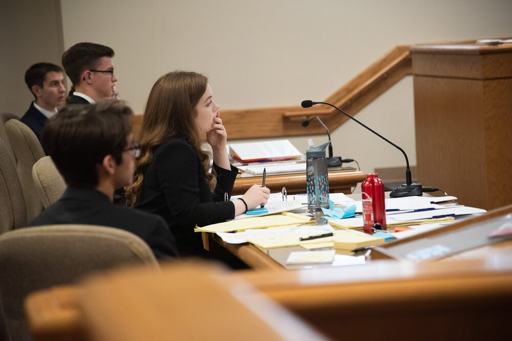
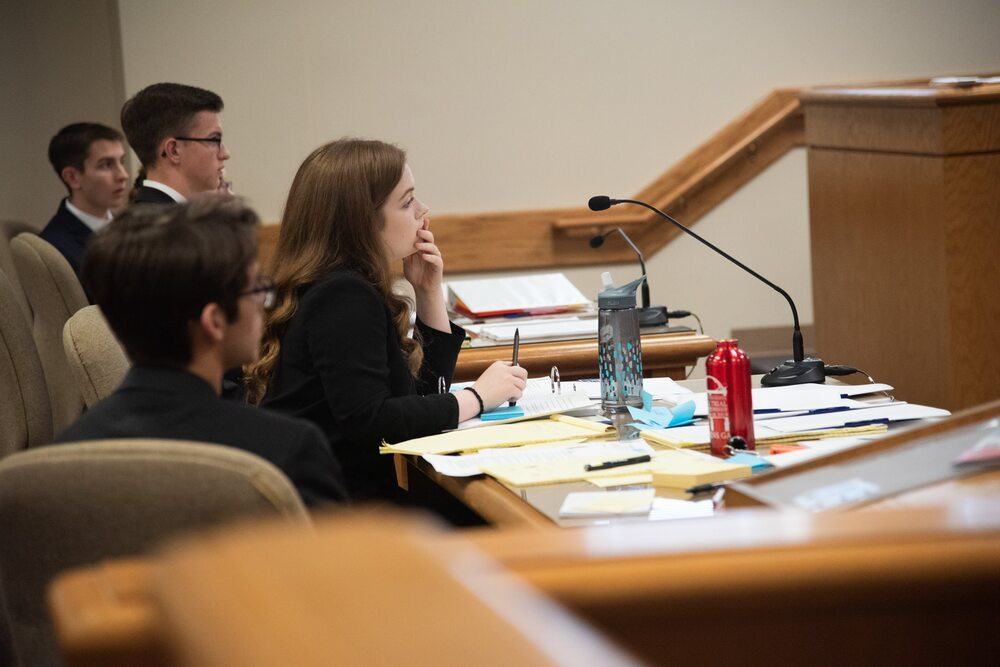

The History of Mock Trial
 

The Mock Trial competition is part of Utah Law Related Education whose goal is to empower Utah's students by engaging unique programs promoting understanding of the law, the legal system, and our rights and responsibilities as engaged citizens.
The Utah Mock Trial competition was established in 1980 to teach students about their rights and responsibilities as citizens. Each year, volunteer attorneys write or adapt a legal case involving issues of interest to youth. A handbook containing established facts, signed affidavits, and other legal information regarding the case, along with the rules and information related to the tournament, is provided for all participants. Team members play roles of witnesses, attorneys, clerks, and bailiffs in courtrooms throughout the state.
The Mock Trial Competition is open to all public and private secondary schools in Utah. Each year, more than 1,000 students, 80 teachers, 350 attorneys, and 100 community representatives participate in over 110 mock trials statewide. The high school championship team participates in the national mock trial competition.